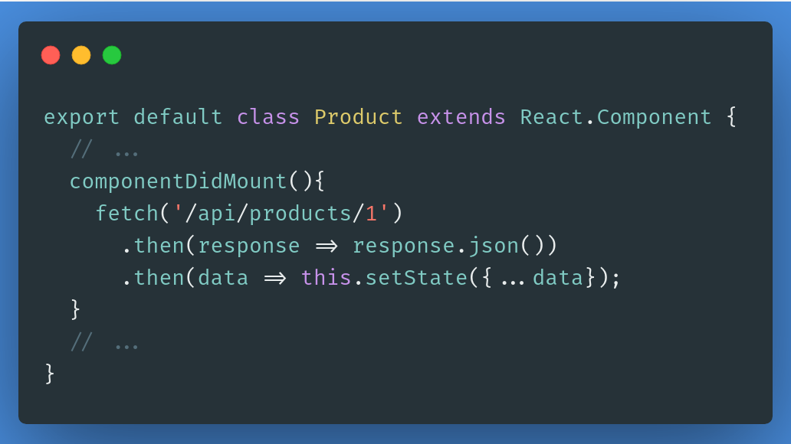
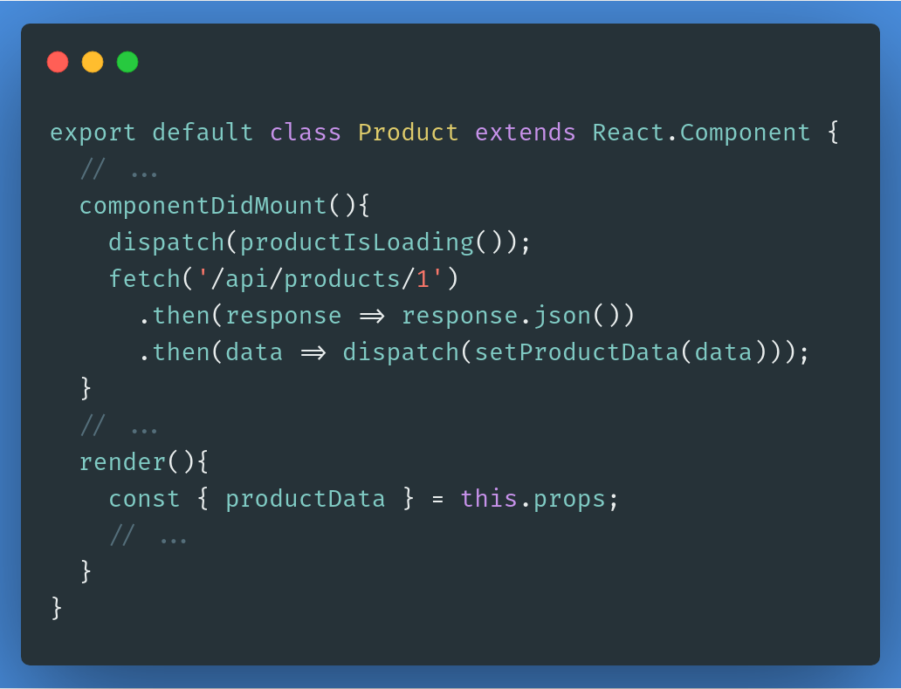
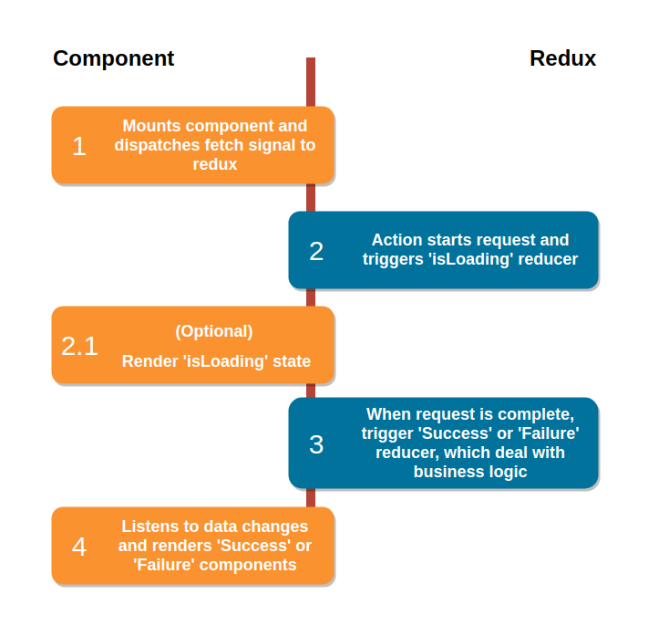
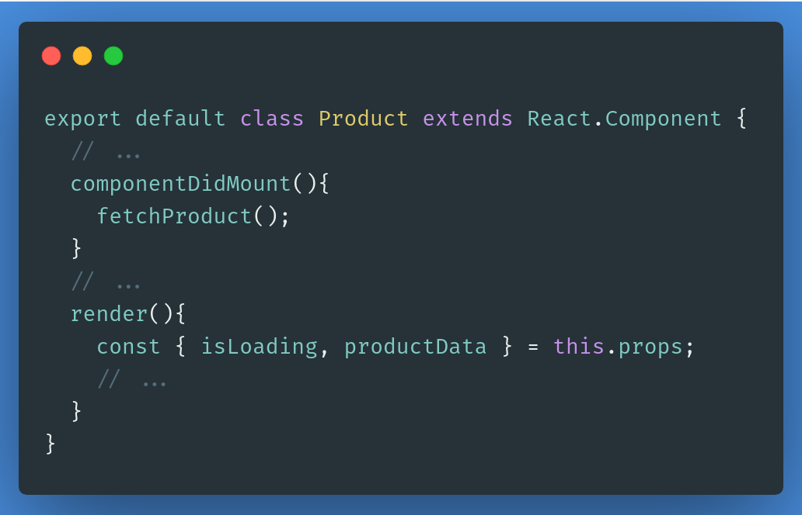
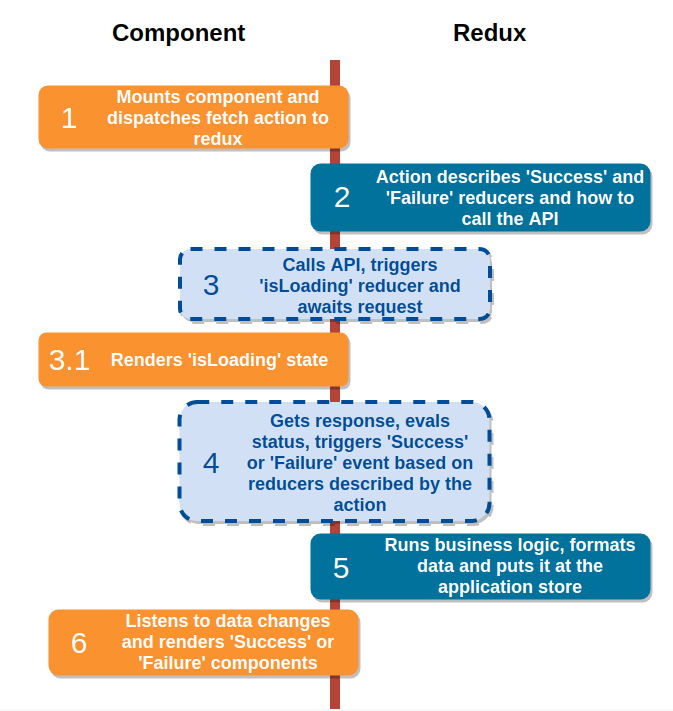
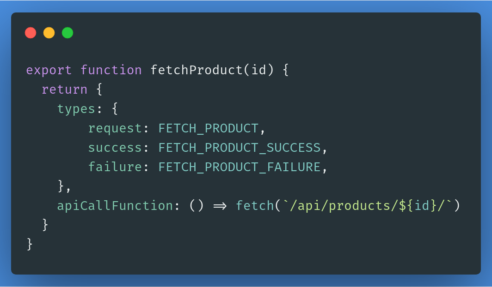
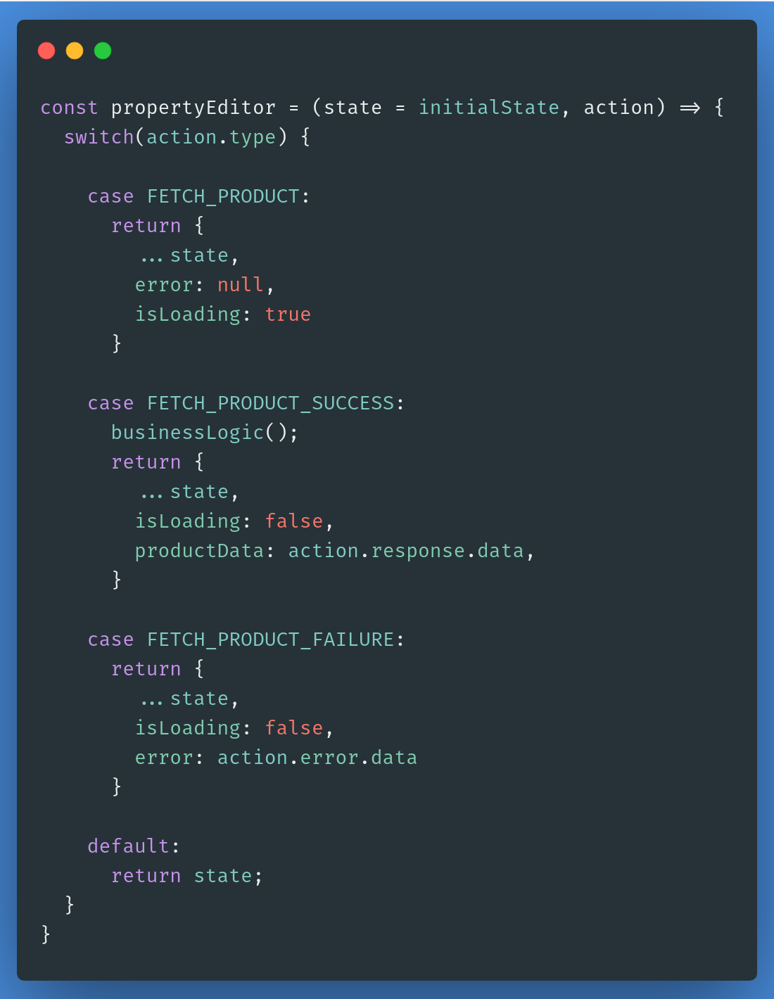

Desacoplando a lógica de componentes React
for native english speakers, here's the translated post
Sempre que há um novo projeto baseado em React, grande parte dos devs frontend irão passar pelo ritual de configuração inicial. Padrões de implementação de estilos, desacoplamento de componentes e estrutura de diretórios irão emergir - nem sempre pro bem. O pior é que todo dev frontend que eu já vi irá resolver o maior problema de todos, o problema de desacoplar lógica de negócio, de uma forma diferente. Em um esforço para criar uma padronização e resolver a questão da camada de domínio aqui na Labcodes, eu pesquisei um bocado e achei uma forma boa e sustentável para lidar com requisições e processamento de dados. O resultado: react-redux-api-tools.
Vamos imaginar um cenário comum: CRUD
Já que o javascript é muito permissivo, há inúmeras maneiras de implementarmos um CRUD em uma SPA. Se limitarmos o escopo ao uso do react, as coisas ficam mais fáceis, mas ainda há possíveis implementações demais. Uma delas é de usar os hooks de ciclo de vida para fazer as requisições. Seu código provavelmente irá ficar parecido com isso:

Eu acho que não preciso falar muito sobre isso, mas vou falar de qualquer forma: essa implementação, mesmo sendo perfeitamente válida, tem alguns grandes problemas.
1.A requisição está sendo feita dentro do componente que, em teoria, deveria ter apenas um trabalho:
renderizar os dados. Se, por exemplo, você precisasse limpar a sessão do usuário ou executar
qualquer lógica de negócio, ela provavelmente estaria aqui, o que é ainda pior;
2. Os dados da resposta da requisição está vivendo dentro do estado do componente, e isso significa que tudo será
perdido assim que o componente desmontar;
3. Você terá sempre que pegar os dados da API para cada instância do componente, mesmo que já tenha
feito essa específica requisição um bilhão de vezes;
4. Não há nenhum estado intermediário entre o início da requisição e sua resposta, então nada de spinners de loading
(apesar de você poder implementar essa lógica construindo um callback hell de setStates);
5. Já que componentes react são hierárquicos, se você precisar desses dados dentro de um componente filho ou pai,
você terá que implementar contextos/props e callbacks. O código fica complicado. RAPIDINHO.
Para melhorar esse código, muitos de nós preferem usar uma biblioteca para prover um estado mais global para a aplicação; um estado que vive fora de todos os componentes.
Segundo passo: usando Redux
Redux é uma das melhores bibliotecas para esse tipo de trabalho. Digamos que você vai usar redux para lidar com dados e lógica de negócio. Assumindo que você usará a camada de reducers para formatar dados e chamar lógicas de domínio, seu componente vai ficar mais ou menos assim:

Isso resolve grande parte dos problemas, mas eu diria que essa solução acopla ainda mais o código e, certeza, deixa ele mais difícil de ler e manter. A causa raiz disso tudo é o fato de que o componente está sendo responsável por absolutamente tudo: pegar os dados da API e orquestrar eventos do redux, quando era para ele estar… renderizando coisas. O fluxo ideal para resolver todos os problemas, pelo menos os mais importantes, seria algo similar a isso:

Note que a única forma de completamente remover a lógica de negócio dos componentes é acionando os casos de uso de ‘Sucesso’ e ‘Falha’ fora do componente. Componentes devem renderizar coisas, não lidar com gerenciamento de estado da aplicação inteira. Isso significa que o componente apenas deve avisar a alguém que precisa de dados, disparando um evento (o evento de ‘pega esses dados pra mim’), e então reagir aos dados quando eles estiverem lá. Para respeitar essa ideia, nosso código do componente deveria ser tão simples quanto isso:

E isso significa que… as actions devem fazer a requisição dos dados? E reducers iriam disparar outras ações? Soa estranho, né? Porque é. E não é o que eu estou sugerindo mesmo.
Eis que chegam os middlewares
Para entregarmos o fluxo ideal de dados, middlewares do redux são maravilhosos. Imaginem que queremos que nosso componente seja exatamente como o código que vimos acima. Se nós, por exemplo, tivéssemos algo entre as actions e os reducers, a gente conseguiria fazer com que esse código do meio fizesse a requisição e, dependendo do resultado, decidisse quais reducers disparar. Assim, deixaríamos o redux livre para fazer seu trabalho de gerenciar o estado da aplicação e lidar com eventos, enquanto os componentes focariam em renderizar coisas - somente renderizar coisas. Estou falando sobre algo como isso aqui:

Com esse fluxo proposto, nossas actions poderiam ser mais ou menos assim:

Ok, vamos com calma. O que você está vendo aí em cima é a nossa convenção atual que descreve uma action de
requisição, que usa o middleware incluído no nosso pacote npm
[react-redux-api-tools](https://www.npmjs.com/package/react-redux-api-tools). Fazer o dispatch dessa
action configura o middleware para fazer a requisição (ao chamar a
apiCallFunction) e para usar o reducer correto assim que a requisição estiver
concluída.
Enquanto isso, nossos componentes e reducers se manteriam inalterados:


E voilá, nosso fluxo está bem mais limpo, simples e desacoplado!
Se você gostou disso ou isso parece mágico demais…
Gostou na API desse middleware? Quer desenvolver seus projetos react-redux dessa maneira? Está curiosa para saber como tudo isso funciona por baixo dos panos? Então você é uma pessoa que poderia usar e contribuir com nosso pacote npm react-redux-api-tools. Reportagem de bugs e sugestões de features são bem vindas! E isso tudo é só o começo; react-redux-api-tools traz um monte de outras features que não consegui descrever nesse post. Dê uma boa olhada na nossa documentação para descobrir como melhorar e simplificar seu código usando nossas ferramentas! Obrigado, e até a próxima!